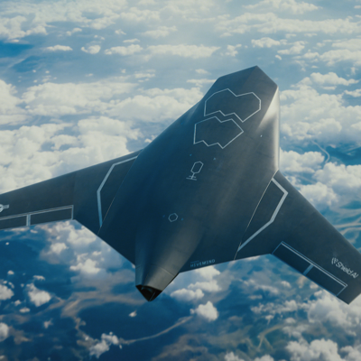

Defense companies are competing to field autonomous uncrewed fighter aircraft
2026, July 22

Defense companies are competing to field autonomous uncrewed fighter aircraft
2026, July 22
United States/Europe
A growing number of defense companies are competing to field autonomous uncrewed fighter aircraft, often called Collaborative Combat Aircraft (CCAs) or "loyal wingmen." These aircraft are designed to fly alongside piloted fighters, carrying out missions such as reconnaissance, electronic warfare, missile strikes, and decoy operations at a fraction of the cost of traditional fighter jets.The competition has accelerated at the 2026 Farnborough International Airshow, where several companies unveiled or demonstrated new systems:
Boeing showcased its MQ-28 Ghost Bat, which has completed more than 100 test flights and is already being evaluated by the Australian Defence Force.
Anduril Industries has conducted live-fire testing of its CCA design and is rapidly expanding production.
General Atomics is promoting its autonomous fighter based on decades of unmanned aircraft experience.
Airbus unveiled two European concepts, the U760 Ravenstorm and U740 Valkyrie, as Europe seeks greater defense independence.
BAE Systems introduced Brontanax, the UK's first purpose-built uncrewed fighter, with flight testing planned for 2027 and entry into service around 2030.
Why militaries want them
These aircraft are intended to:
Fly ahead of crewed fighters into dangerous airspace.
Carry extra missiles or sensors.
Jam enemy radar and communications.
Act as decoys to absorb enemy fire.
Operate with a high degree of autonomy while remaining under human supervision for key decisions.
A major attraction is cost. The U.S. Air Force estimates these aircraft could cost one-third or less than an F-35, making it possible to deploy several autonomous aircraft alongside each crewed fighter.
The U.S. and Europe
The U.S. Air Force plans to acquire more than 150 Collaborative Combat Aircraft before the end of the decade, with a principal contractor expected to be selected by 2027. Meanwhile, European nations are investing heavily in domestic programs to reduce reliance on U.S. suppliers and strengthen their own aerospace industries.
Remaining challenges
Despite rapid progress, several hurdles remain:
Ensuring AI behaves predictably in complex combat environments.
Protecting aircraft against cyberattacks and electronic warfare.
Integrating autonomous aircraft with existing fighter fleets.
Establishing rules on the degree of human control over the use of force.
Most military programs continue to emphasize that humans will remain responsible for authorizing the use of lethal force, even as onboard AI takes on more navigation, coordination, and tactical decision-making.